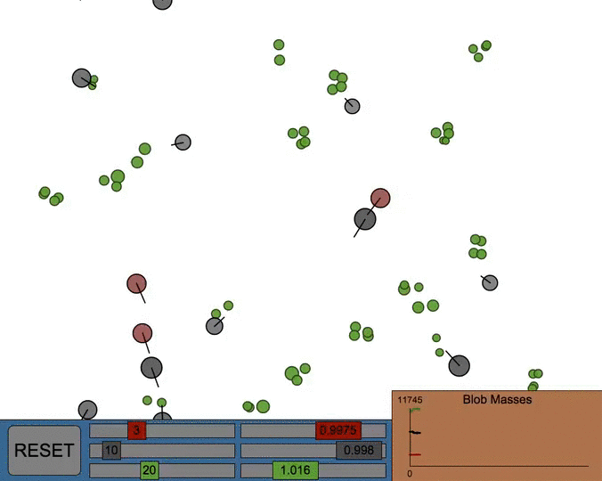
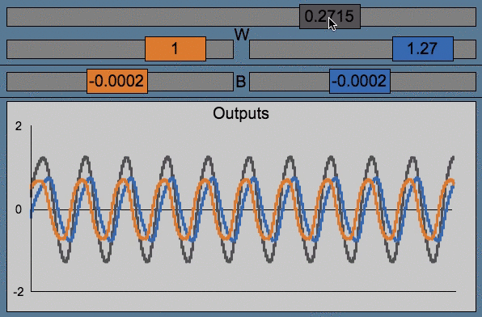
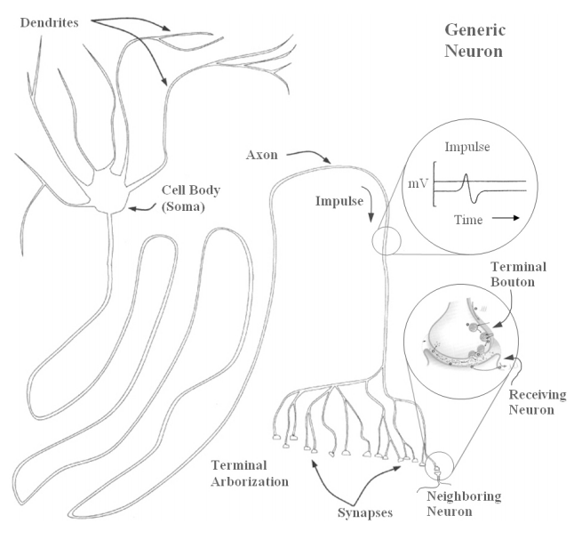
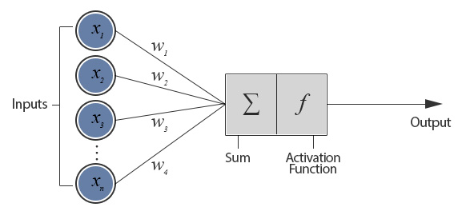

Axquaris's Rather Astounding Webpage of Excellence
Home
This is my website, here I showcase my various expiriments.
My first expiriment was Ecoblobs, a simulation of a bacterial ecosystem. I came up with the idea while reading Daniel Shiffman's The Nature of Code. My development of the project started in the summer of 2015 and went on for about two months. After I had completed this project I moved on to ModularShip, a game about building and piloting a spaceship to fight against AI. This project has been in the works for over two months and utilizes my first unofficial library for Processing, AxNet. I made Axnet as a framework for building and running neural networks, and I am working on using it to make intelligence for ModularShip. During thanksgiving break I have learned to use HTML/CSS, created this website and am currently working on updates for ModularShip.

Ecoblobs
ModularShip

AxNet
About Me
I am a person who codes stuff when not doing homework
Ecoblobs was my first project. It features a dynamic, living ecosystem where different species of simple organisms compete for survival.
The three species of organisms are the red carnivores, grey herbivores, and green plants. All the species are capable of reproduction while only the carnivores and herbivores can move of their own accord and "think". Reproduction is done asexually and mimics binary fission, it only occurs when a creature passes a certain mass limit and is not overcrowded or threatened by other organisms. The AI is fairly simple, it considers all the other relevant creatures in the ecosystem, it then uses a system of equations based on relative mass, distance, and current actions to determine what to do in relation to the other blob and how important doing so is. The average is then taken of all these desires and used to decide a path of acceleration.
The physical world is governed by physical principles like F=M*A and drag, however there is still work to be done such as implementing drag in water. The world itself is a torus, this means that going up will eventually get you to the bottom, and vice versa. This also applies to the left and right edges of the world. The dynamics of this ecosystem are quite realistic and are based upon a simple food chain that tries to keep any one species from becoming too populus or any species dying out, however balancing the species is very difficult so the populations will fluctuate quite a lot.
Controlls:
Bottom left corner button resets the simulation and regenerates the creature populations based on the values entered in the sliders
The 6 different sliders correspond to different variables that affect the growth/metabolism and starting # of all the creatures. The left three correspond to the corresponding color species and define how many creatures are spawned when the simulation is reset. The right three allso correspond to the same color species and will change the growth and metabolism rates of critters when the simulation is reset.
The graph in the far right shows the total mass of each species with the lines corresponding to the similarly colored critter. It's left side shows the newest values. This tool is very useful for seeing how the different species are interacting.
If you press on any creature the graph will be replaced with a list of data about the creature's properties, this is useful for tracking an individual critter or finding out data. To switch back to the graph click anywhere in empty space.
If you press the debug button at the bottom of the program or the "D" key a FPS (Frames Per Second) counter will pop up and a bunch of lines showing the flow of underwater currents pushing the plants will show too. The lines show deviations of the current from it's right-to-left flow. You can turn off the debug mode the same way you enabled it.
This a game I am developing in Processing 3 with Fisica. It is a space shooter where the user has to destroy enemy ships and can steal what parts they drop to improve his/her own ship. Right now you can add modules you your ship, fly around, and test firing on indestructible blobs or an enemy dummy ship. (this feature will be removed after enemies are added or moved to debug mode)
This year for the robotics team at LJHS I am planning to use neural models to help control the robot in the upcoming competition. In past competitions we have had many issues with human error and network latency in driving our robot, the best fix for this is to make the robot capable of autonomously reacting to it's environment and performing actions in response.
This is where neural models come in, NMs are custom-tailored networks of neurons that are capable of intelligently interpreting sensor data, making decisions, and putting them into action somewhat like the human brain does. All people have a complex network of about 86 billion neurons that are massively interconnected to form our nervous system, these networks are vastly more complex than Neural Models, however their basic units (neurons) are a good basis for understanding NMs.

Figure A: A diagram of the biological/generic neuron.

Figure B: The logical structure of an artificial neuron
Figure C: The neural connections of a pattern generator
The Biological Neuron
Shown in Figure A, dendrites transmit information or electrical pulses received from other neurons to the soma, the electrical pulse then travels along the axon and to another cell, artificial neurons function in a similar way.
The Artificial Neuron
In artificial neurons (Figure B) an array of inputs (Xi) is taken, these inputs are then multiplied by a corresponding set of weights (Wi), this is the "dendrite" of the neuron. Next the inputs are added together and fed to an activation function f(Xi) which is usually a logistic function or hyperbolic tangent (tanh). This step can be represented by the soma of a biological neuron. Finally, the result of the activation function is sent to whatever other neurons it is connected to. This behaves like an axon.
Neural Networks
Neural networks are multiple neurons linked up in an orderly fashion such as in Figure C. This figure has two neurons that are interconnected, the different W values represent the weights of the different inputs. The neurons also have B variables that represent biases being added to their sum functions. Below is a program that I have written simulating the network shown in Figure C. It's various sliders do the following:
W CATEGORY
the GREY slider sets W2 to it's own value and W1 to the negative of it's value
ORANGE slider sets W4 to it's current value
BLUE slider controls W3
B CATEGORY
the ORANGE slider controls B2
the BLUE slider sets B1 to it's value
ORANGE represents the neuron on the left, or neuron1. BLUE represents the neuron on the right, or neuron2. GREY represents both neurons or the sum of their outputs.
You may notice that the simulation produces oscillations, this is because the structure shown in Figure C is a CPG or central pattern generator. This particular one takes no inputs and will generate different patterns based on its weights and biases. Often this CPG will stop oscillating if you change it's values too much, a good fix for this is to increase the magnitude of the W GREY slider or lower the B CATEGORY sliders. The frequency can be lowered by reducing the magnitude of the W GREY slider.
While this CPG may seem quite simple it is a good stepping stone for me to peer into the world of neural modeling, this is because the CPG in Figure C is actually a neural model of how living organisms create patterns such as heartbeats and breathing, just without any inputs.